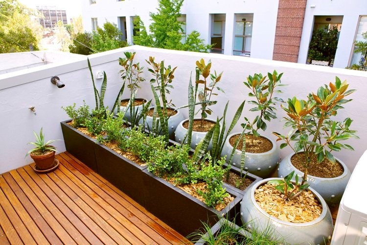

Ini cara termudah buat memulai kebun di atapmu! Cukup ambil pot atau wadah besar, lalu tanam sayuran segar, bunga cantik, atau tanaman hias yang kamu suka. Pilih pot yang sesuai ukuran dan gaya, biar tampilan atapmu makin kece! Kamu bisa dengan mudah susun pot-pot itu di atap, dan kalau mau ubah suasana, tinggal dipindah-pindah aja. Plus, kamu nggak perlu pusing dengan instalasi rumit—cukup pastikan pot punya lubang drainase biar tanaman tetap sehat!
1. Tanam di Pot
